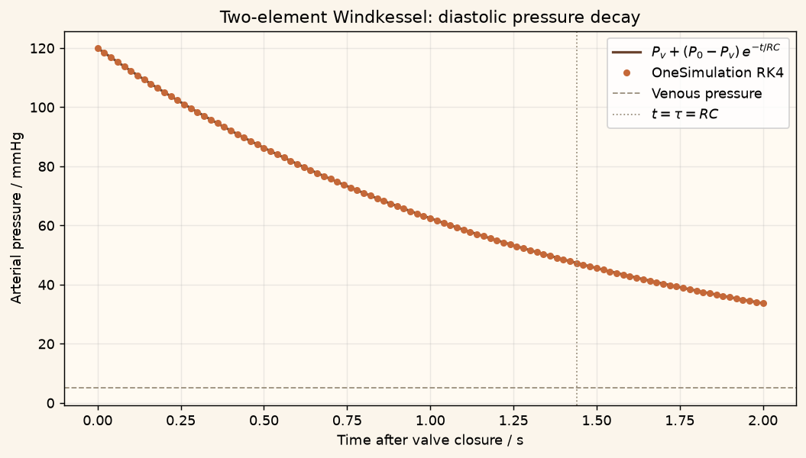

Docs › Examples › Windkessel diastolic decay
Circulation · 0D
Windkessel diastolic decay
A two-element Windkessel during diastole, graded against the exponential pressure decay.

What it computes
OneSimulation integrates a compliance-resistance (Windkessel) balance with no inflow.
What it checks
The pressure follows P = P_v + (P0 - P_v) e^{-t/RC}; the fitted time constant is within about 1e-3.
The notebook
The complete notebook, cell by cell. Run it to produce the figures and the comparison printout.
The classical Windkessel describes the large arteries as a single elastic reservoir (compliance \(C\)) that drains through the peripheral vessels (resistance \(R\)) into the venous side at the reference pressure \(P_\mathrm{v}\). With the aortic valve closed there is no inflow, so the pressure \(P(t)\) in the reservoir obeys
OneSimulation provides this balance as a zero-dimensional hydraulic accumulator and integrates it in time with the classical fourth-order Runge-Kutta method.
Reference. During diastole the pressure relaxes exponentially,
with the time constant \(\tau=RC\). We compare every stored time against this expression and recover \(\tau\) from the simulated curve.
from importlib.metadata import version
import numpy as np
import matplotlib.pyplot as plt
import matplotlib
from cycler import cycler
from matplotlib.colors import LinearSegmentedColormap
# OneSimulation figure style: cream paper, dark-green ink, green-sand-copper field colours
CREAM, INK, GREEN, COPPER = "#F7F2E7", "#223D35", "#336B57", "#B66E43"
FIELD_CMAP = LinearSegmentedColormap.from_list(
"onesimulation", ["#214D43", "#5F9175", "#A8BC91", "#E4D6A0", "#CD9561", "#A85539"])
DIVERGING_CMAP = LinearSegmentedColormap.from_list(
"onesimulation_diverging", ["#104F54", "#5E9996", "#F7F2E7", "#D2996E", "#A4472D"])
for _cmap in (FIELD_CMAP, DIVERGING_CMAP):
if _cmap.name not in matplotlib.colormaps:
matplotlib.colormaps.register(_cmap)
plt.rcParams.update({
"figure.facecolor": CREAM, "savefig.facecolor": CREAM, "axes.facecolor": "#FFFAF2",
"text.color": INK, "axes.labelcolor": INK, "axes.titlecolor": INK, "axes.edgecolor": "#9FA593",
"xtick.color": INK, "ytick.color": INK, "grid.color": "#D5D7C8", "image.cmap": "onesimulation",
"axes.prop_cycle": cycler(color=[GREEN, COPPER, "#5F9175", "#A85539", "#214D43", "#CD9561", "#8B9A8D"]),
})
from onesim.cad.geometry import LumpedDomain
from onesim.meshing import LumpedMesh
from onesim.numerics import Numerics
from onesim.numerics.discretization import LumpedParameters
from onesim.numerics.time import ClassicalRungeKutta4
from onesim.physics.systems import HydraulicAccumulator
from onesim.results.storage import MemoryOutputSink, Output
from onesim.simulation import Problem, Simulation
from onesim.simulation.initial_conditions import InitialValue
print("OneSimulation:", version("onesimulation"))Parameters and model
The parameters can be changed. The reference formula below stays valid as long as the compliance, the resistance and the venous pressure are constant and there is no inflow. The values are typical textbook numbers for a resting adult, entered in clinical units and converted to SI for the model.
mmHg = 133.322 # Pa per mmHg
mL = 1.0e-6 # m^3 per millilitre
compliance = 1.2 * mL / mmHg # m^3/Pa, arterial compliance C
resistance = 1.2 * mmHg / (mL / 1.0) # Pa*s/m^3, peripheral resistance R (1.2 mmHg*s/mL)
venous_pressure = 5.0 * mmHg # Pa, reference pressure on the venous side
initial_pressure = 120.0 * mmHg # Pa, arterial pressure at valve closure
time_constant = resistance * compliance
end_time = 2.0 # s, a long idealized diastole
time_step = 0.02 # s
print(f"time constant RC = {time_constant:.3f} s")
domain = LumpedDomain()
model = HydraulicAccumulator(
domain=domain.system,
compliance=compliance,
resistance=resistance,
reference_pressure=venous_pressure,
external_flow=0.0,
)
simulation = Simulation(
problem=Problem(
name="Two-element Windkessel: diastolic decay",
geometry=domain,
physics=(model,),
initial_conditions=(InitialValue(model.pressure, initial_pressure),),
),
mesh=LumpedMesh(domain),
numerics=Numerics(
spatial=LumpedParameters(),
time_integrator=ClassicalRungeKutta4(),
),
)
simulation.validate().require_valid()
sink = MemoryOutputSink()
result = simulation.run(
start_time=0.0,
end_time=end_time,
time_step=time_step,
output=Output(fields=(model.pressure,), interval=time_step, sink=sink),
)
times = np.asarray([float(s.time) for s in sink.snapshots])
pressures = np.asarray([
float(np.asarray(s.fields[model.pressure.field_id].values).reshape(-1)[0])
for s in sink.snapshots
])Comparison with the closed-form solution
We evaluate the exponential reference at every stored time and fit the time constant to the simulated decay. A passing check shows that this numerical example agrees with the Windkessel equation; it is not a validation against measured blood pressure.
reference = venous_pressure + (initial_pressure - venous_pressure) * np.exp(-times / time_constant)
max_abs_error = float(np.max(np.abs(pressures - reference)))
print(f"Maximum absolute error against the exponential: {max_abs_error:.3e} Pa "
f"({max_abs_error / mmHg:.3e} mmHg)")
# Recover the time constant from the log-slope of the excess pressure.
excess = pressures - venous_pressure
fitted_rate = -np.polyfit(times, np.log(excess), 1)[0]
fitted_time_constant = 1.0 / fitted_rate
print(f"Time constant: fitted {fitted_time_constant:.4f} s, exact RC {time_constant:.4f} s")
# After one time constant the excess pressure has dropped to 1/e of its start value.Figure
fig, ax = plt.subplots(figsize=(8, 4.5), constrained_layout=True)
fig.patch.set_facecolor("#fbf5eb")
ax.set_facecolor("#fffaf2")
dense_t = np.linspace(0.0, end_time, 400)
dense_ref = venous_pressure + (initial_pressure - venous_pressure) * np.exp(-dense_t / time_constant)
ax.plot(dense_t, dense_ref / mmHg, color="#6b442f", lw=1.8, label=r"$P_v+(P_0-P_v)\,e^{-t/RC}$")
ax.plot(times, pressures / mmHg, "o", color="#c56838", ms=4, label="OneSimulation RK4")
ax.axhline(venous_pressure / mmHg, color="#9a8f7d", ls="--", lw=1.0, label="Venous pressure")
ax.axvline(time_constant, color="#9a8f7d", ls=":", lw=1.0, label=r"$t=\tau=RC$")
ax.set(xlabel="Time after valve closure / s", ylabel="Arterial pressure / mmHg",
title="Two-element Windkessel: diastolic pressure decay")
ax.grid(alpha=0.25)
ax.legend()
plt.show()Going further
Change the compliance or the resistance and relate the new decay to \(\tau=RC\); a stiffer (less compliant) arterial tree empties faster. Setting a constant external_flow adds a steady inflow and shifts the asymptote to \(P_\mathrm{v}+R\,Q_\mathrm{in}\), the mean arterial pressure of a continuous-flow pump; adapt the reference formula before studying that case. A three-element Windkessel adds a characteristic impedance in series with the inflow; with the valve closed it carries no flow, so the diastolic decay is the same as here.